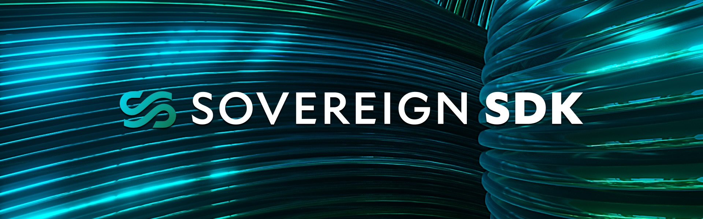

Introduction
Welcome to the Sovereign SDK Book!
With P99 of transaction executions under 10 milliseconds, the Sovereign SDK is fast enough to bring complex financial systems, like Central-Limit Orderbooks (CLOBs), fully on-chain.
The Sovereign SDK provides much more flexibility and performance than traditional blockchain frameworks. In this guide, you'll learn to take full advantage of the SDK's unique features and bring your app from idea to production.
Let's get started!
Why Build a Dedicated Rollup For Your Application?
For almost a decade, developers have been forced to build applications on shared, general-purpose blockchains. This model forces apps with vastly different needs to compete for the same limited blockspace. Building your application as a dedicated rollup gives you three strategic advantages:
- Dedicated Throughput: Your users will never have to compete with a viral NFT drop. A rollup gives your application its own dedicated lane, ensuring a consistently fast and affordable user experience.
- Capturing More Value: On shared blockchains, user fees primarily benefit the chain operators (i.e. L1 validators or general-purpose L2 sequencers). With a rollup, your application and its users can capture the vast majority of that value, creating a sustainable economic engine for your project.
- Full Control & Flexibility: Go beyond the limitations of a shared virtual machine. A rollup gives you full control over the execution environment, allowing you to define your own rules for how transactions are processed. With a rollup, you're in the driver's seat.
Why Choose the Sovereign SDK?
The Sovereign SDK is designed around four key goals to provide an unmatched developer and user experience:
- Total Customization: While rollups promise flexibility, existing frameworks are overly restrictive. With its modular Rust runtime,Sovereign SDK empowers you to customize as much or as little as neeeded. Easily add custom fee logic, integrate tailored authenticators, prioritize specific transaction types, or even swap out the authenticated state store. All without wrestling with legacy code.
- Best-in-Class Performance: With P99 < 10 ms for transaction execution and throughput exceeding 4,500 TPS, the Sovereign SDK is orders of magnitude faster than competing frameworks like Orbit, the OP Stack, or the Cosmos SDK.
- Developer-Friendly Experience: Write your logic in standard Rust, run
cargo build, and get a complete full-node implementation with REST & WebSocket APIs, an indexer, auto-generated OpenAPI specs, and a sequencer with automatic failover out of the box. No deep blockchain expertise required. - Future-Proof Architecture: Never get locked into yesterday's tech stack. With the Sovereign SDK, you can switch data availability layers or zkVMs with just a few lines of code, ensuring your project remains agile for years to come.
How It Works
As a developer, you write your rollup's business logic in Rust, and the SDK handles the complexity of creating a complete, production-ready node implementation.
The magic happens in two stages: real-time execution and on-chain settlement.
-
Real-Time Execution (Soft Confirmations): Users send transactions to a sequencer. The sequencer executes these transactions instantly (typically in under 2-5ms) and returns a "soft confirmation" back to the user. This provides a real-time user experience that feels like a traditional web application.
-
On-Chain Settlement & Verification: Periodically, the sequencer batches thousands of these transactions and posts them to an underlying Data Availability (DA) layer like Celestia. From this point, the rest of the network—the full nodes—can read the ordered data and execute the transactions to independently verify the new state of the rollup.
Finally, specialized actors called provers (in zk-rollup mode) or attesters (in optimistic-rollup mode) generate cryptographic proofs or attestations that the state was computed correctly. These are posted back to the DA layer, allowing light clients and bridges to securely verify the rollup's state without having to re-execute every transaction.
This two-stage process gives you the best of both worlds: the instant, centralized execution needed for high-performance applications, combined with the censorship-resistance and trust-minimized verification of a traditional blockchain.
Ready to Build?
In the next section we'll get you up and running with your first Sovereign SDK rollup.